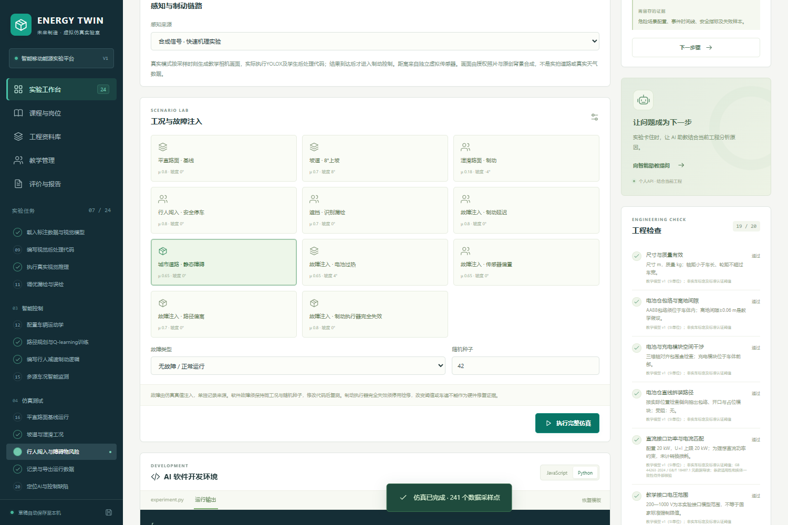
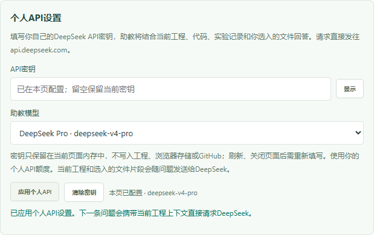
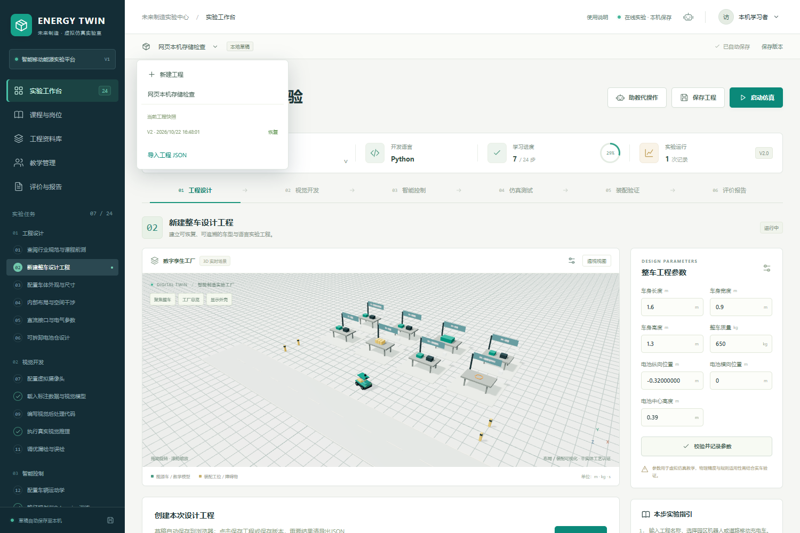

移动能源智造实验室：网页版使用说明
本网页无需安装、无需登录。实验在浏览器中运行，工程保存在你当前使用的浏览器；在线助教使用你自己填写的DeepSeek API密钥。此站没有班级、教师收取作业或云端工程同步。
一、打开网页，开始实验
- 使用Chrome或Edge打开平台。首次执行代码或模型时需下载运行时与权重，等加载结束再操作。
- 上方选择“园区机器人”或“道路移动充电车”。首次建议选择园区机器人，再进入左侧步骤7—11配置相机、选择样本、执行真实推理。
- 在代码区选择Python或JavaScript，修改后点击“运行代码”。步骤13运行真实Q-learning训练；步骤16—18选择工况，点击“执行完整仿真”。
- 运行结束后查看实际轨迹、检测、制动请求和响应、碰撞及故障记录。算法结果与教学规则分开核对，失败结果会保留。

二、填写个人API密钥，使用在线助教
- 点击顶部机器人图标，打开“实验助教”。在“个人API设置”的API密钥框填入你自己的DeepSeek密钥；不需要把密钥发给项目维护者。
- 选择Flash或Pro，点击“应用个人API”。输入框会清空，并显示“本页已配置”；这表示设置已应用，实际连通性以随后收到的模型答复为准。
- 在下方输入问题。Enter发送，Shift+Enter换行；中文输入法确认候选词不会立即发送。可以继续追问，也可以直接换一个问题。
- 助教会收到与当前工程有关的步骤、布局、代码、运行事件与学习草稿。讨论其他文件时，点击“添加项目文件”主动选入。文件只发送提取的有限片段，无法读取你未提供的电脑文件。
- 每条成功答复标明实际返回的模型。切换模型后再次点击“应用个人API”，下一条问题使用新设置。

请求直接发往api.deepseek.com，使用你的个人API额度。密钥不写入工程、localStorage、sessionStorage、IndexedDB或GitHub；刷新、关闭页面后需要重新填写。点击“清除密钥”可立即移除本页设置。当前工程相关内容和你选入的文件片段会随问题发送给DeepSeek。
三、保存工程、版本和报告
- 草稿自动保存在当前浏览器。点击“保存工程”可将完整工程存入本机工程库；“保存版本”再留一份可回溯快照。
- 点击上方工程名称旁的下拉箭头，打开已保存工程、恢复快照或新建空白工程。恢复前会自动保留当前已保存版本。
- 在“评价与报告”导出完整JSON和可打印报告。切换电脑、清理浏览器或使用隐私窗口前，先导出JSON。
- 在另一台电脑打开同一网址后，从工程菜单选择“导入工程JSON”。本机保存不等于云端同步，也不代表向教师正式提交。

四、遇到问题时
- 401／密钥无效：检查复制是否完整、是否有空格，重新填写并应用。
- 402／余额不足：检查个人DeepSeek API账户。聊天网页会员与API额度是否通用，以服务方说明为准。
- 网络错误或超时：检查浏览器是否能连接DeepSeek，恢复后重发原问题；失败不会被替换为在线模型答复。
- 刷新后助教要求填写：密钥按设计不持久保存，重新填写即可；工程保存与密钥是两件事。
- 代码超时：页面会终止该次隔离运行。检查循环后重跑；重要代码先保存版本。
- 草稿空间不足：保持页面打开，先保存至本机工程库或导出JSON。不要先清理浏览器数据。
- 换电脑没有记录：从原电脑导出工程JSON，再在新电脑导入。
本软件采用注明假设的教学模型。图像靶标、机械制动、温升、工况和分数可用于教学对照，不替代实车认证、专家评审或真实教学成效证据。课程与各实验的进一步说明可查阅完整实验手册；其中账号、局域网和服务端操作属于安装部署模式，纯网页不启用。